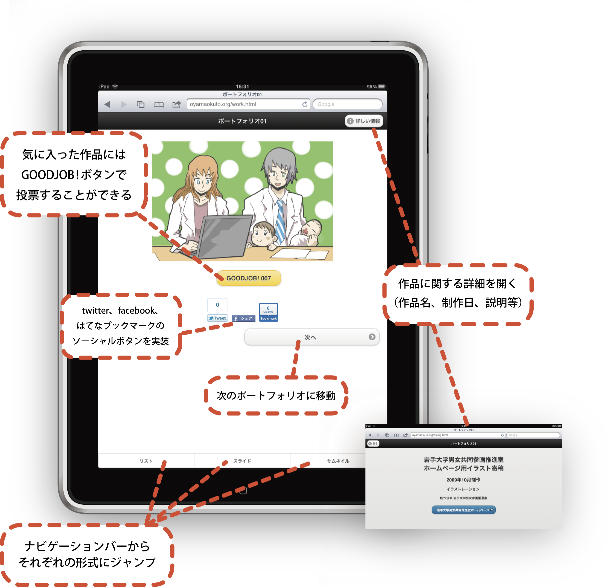
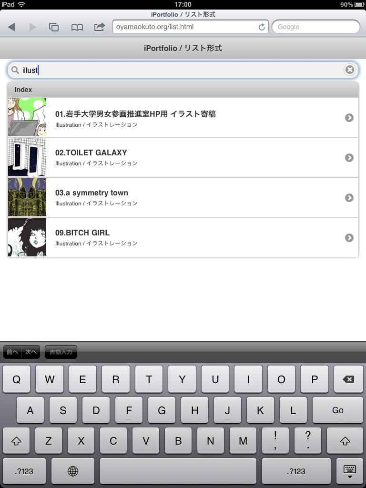
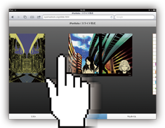
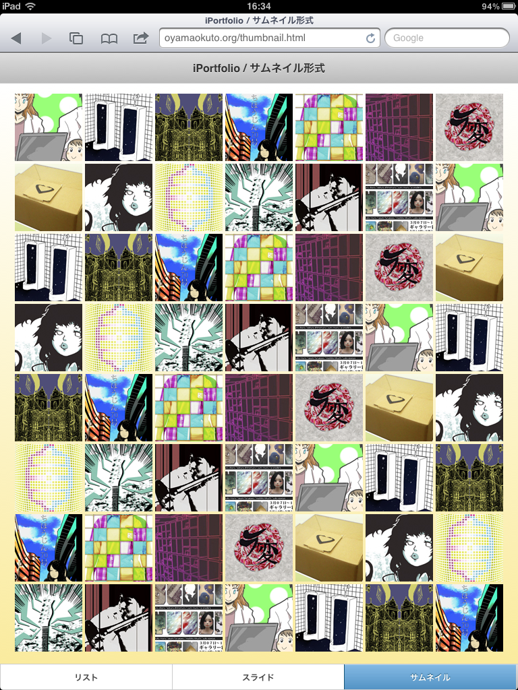

最近、iPadなどのタブレット端末が一般的に普及し始め、それらを用いてのプレゼンテーションが増えてきた。しかし一方で、プレゼンテーションのフォーマットというものが未だに定まっていないように見えたのである。そこでHTML5、jQueryMobileを用いたwebデザインからの観点から、ポートフォリオのフォーマットをシンプルに定め、プレゼンテーションの助長となれるように制作研究を行った。
リストによる明確な区分とフィルタ機能における 閲覧補助といった機能性が特化した形式。 多量のデータを扱う点で優れている。

作品の全体像を捉えられスライドにおける動的な要素でのビジュアル性を特化した形式。作品の全体像を見せる点で優れている。

画面内にすべての作品群を収めた視認スピードを 向上させ、かつシンプルさに特化した形式。 作品をすぐに選べる手軽さに優れている。
